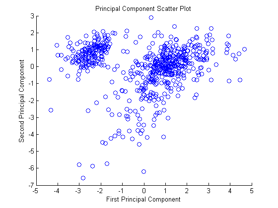
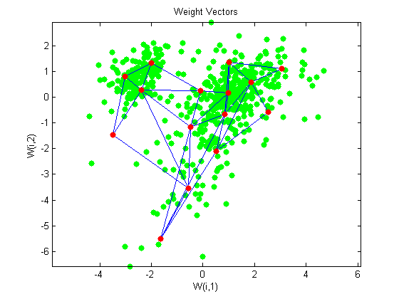
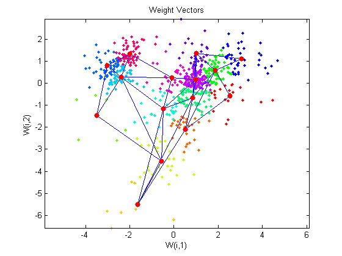

Gene Expression Analysis
This example demonstrates looking for patterns in gene expression profiles in baker's yeast using neural networks.
Contents
The Problem: Analyzing Gene Expressions in Baker's Yeast (Saccharomyces Cerevisiae)
The goal is to gain some understanding of gene expressions in Saccharomyces cerevisiae, which is commonly known as baker's yeast or brewer's yeast. It is the fungus that is used to bake bread and ferment wine from grapes.
Saccharomyces cerevisiae, when introduced in a medium rich in glucose, can convert glucose to ethanol. Initially, yeast converts glucose to ethanol by a metabolic process called "fermentation". However once supply of glucose is exhausted yeast shifts from anerobic fermentation of glucose to aerobic respiraton of ethanol. This process is called diauxic shift. This process is of considerable interest since it is accompanied by major changes in gene expression.
The demo uses DNA microarray data to study temporal gene expression of almost all genes in Saccharomyces cerevisiae during the diauxic shift.
You need the Bioinformatics Toolbox™ to run this demo.
if isempty(ver('bioinfo')) errordlg('This demo requires the Bioinformatics Toolbox.'); return; end
The Data
This example uses data from DeRisi, JL, Iyer, VR, Brown, PO. "Exploring the metabolic and genetic control of gene expression on a genomic scale." Science. 1997 Oct 24;278(5338):680-6. PMID: 9381177
The full data set can be downloaded from the Gene Expression Omnibus website, http://www.ncbi.nlm.nih.gov/geo/query/acc.cgi?acc=GSE28 .
Start by loading the data into MATLAB®.
load yeastdata.mat
Gene expression levels were measured at seven time points during the diauxic shift. The variable times contains the times at which the expression levels were measured in the experiment. The variable genes contains the names of the genes whose expression levels were measured. The variable yeastvalues contains the "VALUE" data or LOG_RAT2N_MEAN, or log2 of ratio of CH2DN_MEAN and CH1DN_MEAN from the seven time steps in the experiment.
To get an idea of the size of the data you can use numel(genes) to show how many genes there are in the data set.
numel(genes)
ans =
6400
genes is a cell array of the gene names. You can access the entries using MATLAB cell array indexing:
genes{15}
ans = YAL054C
This indicates that the 15th row of the variable yeastvalues contains expression levels for the ORF YAL054C. You can use the web command to access information about this ORF in the Saccharomyces Genome Database (SGD).
url = sprintf(... 'http://genome-www4.stanford.edu/cgi-bin/SGD/locus.pl?locus=%s',... genes{15}); web(url);
Filtering the Genes
The data set is quite large and a lot of the information corresponds to genes that do not show any interesting changes during the experiment. To make it easier to find the interesting genes, the first thing to do is to reduce the size of the data set by removing genes with expression profiles that do not show anything of interest. There are 6400 expression profiles. You can use a number of techniques to reduce this to some subset that contains the most significant genes.
If you look through the gene list you will see several spots marked as 'EMPTY'. These are empty spots on the array, and while they might have data associated with them, for the purposes of this example, you can consider these points to be noise. These points can be found using the strcmp function and removed from the data set with indexing commands.
emptySpots = strcmp('EMPTY',genes);
yeastvalues(emptySpots,:) = [];
genes(emptySpots) = [];
numel(genes)
ans =
6314
In the yeastvalues data you will also see several places where the expression level is marked as NaN. This indicates that no data was collected for this spot at the particular time step. One approach to dealing with these missing values would be to impute them using the mean or median of data for the particular gene over time. This example uses a less rigorous approach of simply throwing away the data for any genes where one or more expression level was not measured.
The function isnan is used to identify the genes with missing data and indexing commands are used to remove the genes with missing data.
nanIndices = any(isnan(yeastvalues),2); yeastvalues(nanIndices,:) = []; genes(nanIndices) = []; numel(genes)
ans =
6276
If you were to plot the expression profiles of all the remaining profiles, you would see that most profiles are flat and not significantly different from the others. This flat data is obviously of use as it indicates that the genes associated with these profiles are not significantly affected by the diauxic shift; however, in this example, you are interested in the genes with large changes in expression accompanying the diauxic shift. You can use filtering functions in the Bioinformatics Toolbox™ to remove genes with various types of profiles that do not provide useful information about genes affected by the metabolic change.
You can use the genevarfilter function to filter out genes with small variance over time. The function returns a logical array of the same size as the variable genes with ones corresponding to rows of yeastvalues with variance greater than the 10th percentile and zeros corresponding to those below the threshold.
mask = genevarfilter(yeastvalues);
% Use the mask as an index into the values to remove the filtered genes.
yeastvalues = yeastvalues(mask,:);
genes = genes(mask);
numel(genes)
ans =
5648
The function genelowvalfilter removes genes that have very low absolute expression values. Note that the gene filter functions can also automatically calculate the filtered data and names.
[mask, yeastvalues, genes] = genelowvalfilter(yeastvalues,genes,... 'absval',log2(3)); numel(genes)
ans = 822
Use geneentropyfilter to remove genes whose profiles have low entropy:
[mask, yeastvalues, genes] = geneentropyfilter(yeastvalues,genes,... 'prctile',15); numel(genes)
ans = 614
Principal Component Analysis
Now that you have a manageable list of genes, you can look for relationships between the profiles.
Principal-component analysis(PCA) is a useful technique that can be used to reduce the dimensionality of large data sets, such as those from microarray analysis. This technique isolates the principal components of the dataset eliminating those components that contribute the least to the variation in the data set.
yeastvalues = mapstd(yeastvalues'); % Normalize data pc = processpca(yeastvalues,0.15); % PCA
The input vectors are first normalized, using mapstd, so that they have zero mean and unity variance. processpca is the function that implements the PCA algorithm. The second argument passed to processpca is 0.15. This means that processpca eliminates those principal components that contribute less than 15% to the total variation in the data set. The variable pc now contains the principal components of the yeastvalues data.
The principal components can be visiualized using the scatter function.
figure scatter(pc(1,:),pc(2,:)); xlabel('First Principal Component'); ylabel('Second Principal Component'); title('Principal Component Scatter Plot');
Cluster Analysis: Self-Organizing Maps
The principal components can be now be clustered using the Self-Organizing map (SOM) clustering algorithm available in the neural network toolbox.
The newsom function creates a Self-Organizing map network which can then be trained with the train function.
net = newsom(pc,[5 3]); net = train(net, pc);
Use plotsom to display the network over a scatter plot of the data. Note that the SOM algorithm uses random starting points so the results will vary from run to run.
figure plot(pc(1,:),pc(2,:),'.g','markersize',20) hold on plotsom(net.iw{1,1},net.layers{1}.distances) hold off
You can assign clusters using the SOM by finding the nearest node to each point in the data set.
distances = dist(pc',net.IW{1}');
[d,cndx] = min(distances,[],2);
% cndx gives the cluster index
figure
gscatter(pc(1,:),pc(2,:),cndx); legend off;
hold on
plotsom(net.iw{1,1},net.layers{1}.distances);
hold off
 You can also use other clustering algorithms like Hierarchial clustering and K-means, available in the Statistics toolbox for cluster analysis.
Glossary
ORF - An open reading frame (ORF) is a portion of a gene’s sequence that contains a sequence of bases, uninterrupted by stop sequences, that could potentially encode a protein.